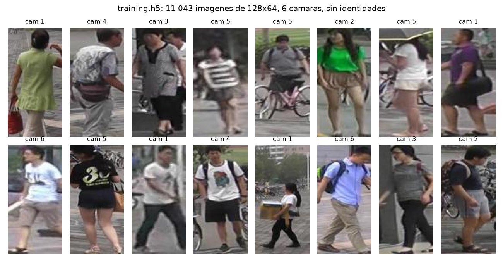
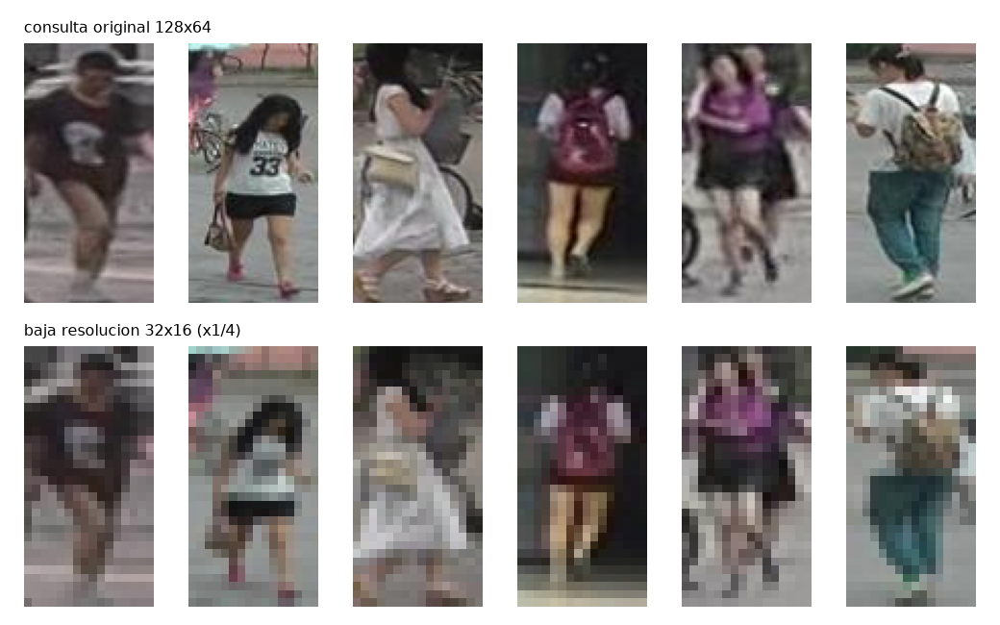
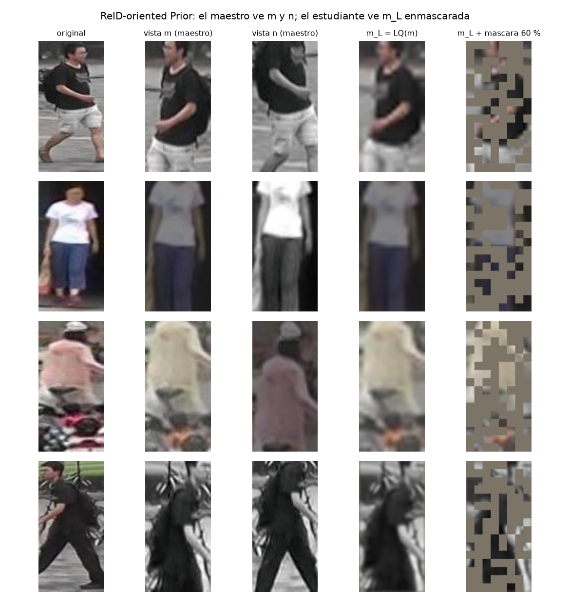
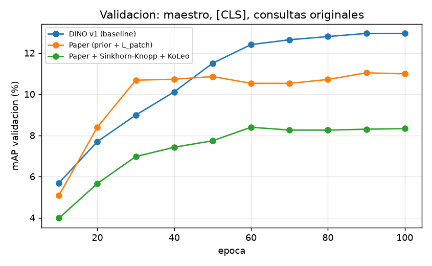

flowchart LR
X["imagen x"] --> M["vista m"]
X --> N["vista n"]
M --> S["estudiante S<br/>(backprop)"]
N --> T["maestro T<br/>(EMA de S)"]
S --> PS["proyector → softmax(·/τs)"]
T --> PT["proyector → centering → softmax(·/τt)"]
PT -.->|"objetivo"| L["cross-entropy"]
PS --> L
¿Es la misma persona en otra cámara?
Re-identificación auto-supervisada con ReID-oriented Prior y destilación maestro–estudiante (Yang et al., 2025)
Metodología
Encontrar a la misma persona en otra cámara
- Entrada: una imagen de consulta de 128×64 píxeles.
- Salida: la galería ordenada por similitud coseno del embedding.
- Sin etiquetas de identidad durante el entrenamiento.
- Dos condiciones de prueba: consultas originales y a 1/4 de resolución.
- Implementamos Yang et al. (2025, The Visual Computer): DINO con un prior orientado a ReID.
11 043 imágenes de entrenamiento, 6 cámaras
3 368 → 19 732 consultas y galería de test
mAP · Rank-1/5/10 protocolo Market-1501
El dataset: Market-1501

Recortes de 128×64 de seis cámaras en un campus. Validación: 100 consultas y 1 793 imágenes de galería, con identidades solo para medir. Test: 750 identidades distintas a las de entrenamiento.
¿Por qué es difícil?

- La misma persona cambia de punto de vista, fondo y escala entre cámaras.
- Las consultas de baja resolución son de 32×16: se pierde el detalle de ropa y accesorios.
- Personas distintas con ropa parecida se confunden fácilmente.
- No hay identidades: el modelo tiene que descubrir solo qué es invariante.
El embedding debe ser invariante a la cámara y robusto a la pérdida de resolución, sin ver ninguna etiqueta.
Punto de partida: DINO v1
Dos redes idénticas. El estudiante se entrena por gradiente; el maestro es una media móvil exponencial del estudiante. El maestro produce una distribución sobre \(K\) prototipos que el estudiante debe imitar. Centering (restar una media móvil) y sharpening (temperatura baja) evitan el colapso.
Lo que agrega el paper: ReID-oriented Prior

El maestro ve las vistas limpias \((m_O, n_O)\). El estudiante ve una versión degradada: LQ (blur gaussiano σ = 1 y motion blur L = 3) y RM (60 % de los tokens reemplazados por un token de máscara).
Dos proyectores, dos pérdidas
\[ \mathcal{L}_{patch}(m_O, m_L, m_R) = -\sum_{i=1}^{N} f^{T}_{patch}(T(m^i_O))^{\top} \log f^{S}_{patch}(S(m^i_L, m^i_R)) \]
\[ \mathcal{L}_{[CLS]}(m_O, n_L, n_R) = -f^{T}_{[CLS]}(T(m_O))^{\top} \log f^{S}_{[CLS]}(S(n_L, n_R)) \]
\[ \mathcal{L}_{pre} = \mathcal{L}_{patch}(m) + \mathcal{L}_{patch}(n) + \lambda\,[\mathcal{L}_{[CLS]}(m_O, n) + \mathcal{L}_{[CLS]}(n_O, m)] \]
- Patch, misma vista: cada token degradado del estudiante imita al token limpio del maestro.
- [CLS], vista cruzada: la imagen global de \(n\) debe coincidir con la de \(m\) (como DINO).
- Un solo proyector con pesos compartidos entre [CLS] y patches (§4.1.2).
- \(\lambda = 0.55\).
La pérdida de patches restaura detalle local; la de [CLS] alinea la semántica global entre vistas.
Nuestra ablación: dos ideas de DINOv2
Sinkhorn-Knopp en vez de centering
- El maestro produce una matriz \(Q\) (imágenes × prototipos) doblemente estocástica.
- Tres iteraciones de normalización alternada de filas y columnas.
- Obliga a repartir el batch en partes iguales entre los prototipos.
Regularizador KoLeo
\[ \mathcal{L}_{koleo} = -\frac{1}{B}\sum_{i} \log\, d_{nn}(x_i) \]
- \(d_{nn}\): distancia al vecino más cercano del batch.
- Maximiza la entropía diferencial: separa los embeddings.
- Peso 0.1, como en DINOv2.
Implementación
Del paper al laboratorio
| Paper | Este trabajo | Motivo |
|---|---|---|
| Pre-entrena en LUPerson (4.18 M imágenes) | 11 043 imágenes de Market-1501 | Dato del laboratorio |
| ViT-S/16 a 256×128 | ViT-S/8 a 128×64 (mismos 128 tokens) | No reescalar: no hay información que ganar |
| LQ = blur gaussiano + motion blur | LQ + reducción ×4 bicúbica (p = 0.5) | La evaluación usa consultas a 1/4 |
| Fine-tuning supervisado con triplet loss | Sin fine-tuning: embedding = token [CLS] del backbone, L2 + coseno | El lab prohíbe identidades |
| Pérdida de patches sobre \(N\) tokens (Ec. 1) | Igual, sobre todos los tokens | Los visibles también están degradados |
| 4 × V100, batch 256 | 1 × RTX A2000 12 GB, batch 128, bf16 | lr escalado: 5e-4 · 128/256 |
La arquitectura, en 150 líneas
reid/model.py
ViT: conv 8×8 → 128 tokens + [CLS], 12 bloques pre-norm de 384-d y 6 cabezas, token de máscara aprendible. 21.4 M parámetros.Head: MLP 384 → 2048 → 2048 → 256, L2, prototipos \(K = 4096\) con pesos normalizados.
reid/prior.py
gaussian_blur,motion_blur(ángulo aleatorio por imagen),downsample,random_mask.
reid/loss.py
DistillLoss: centering EMA (0.9) osinkhorn_knopp; cross-entropy maestro → estudiante.koleo.
train.py
- Un
Headpor red; el mismo módulo se aplica atokens[:, 0]y atokens[:, 1:]. t_cls.roll(b)cruza las vistas para la pérdida [CLS].- Maestro:
p_t.lerp_(p_s, 1 − m)tras cada paso.
Cómo entrenamos
- AdamW, lr 2.5e-4 (5e-4 · 128/256), weight decay 0.04.
- 10 épocas de warmup lineal y decaimiento coseno a 1e-6.
- 100 épocas, 86 pasos por época, ~65 s por época en una RTX A2000.
- Temperatura del maestro 0.04 → 0.07 en 30 épocas; estudiante 0.1.
- Momentum del maestro 0.996 → 1 (coseno).
- Clip de gradiente 3.0; prototipos congelados en la primera época (truco de DINO).
- Aumentaciones por vista: recorte aleatorio (50–100 %), flip, color jitter, escala de grises, solarización.
- bf16 con autocast; 9.5 GB de VRAM.
- Validación cada 10 épocas con el maestro.
Cada run cuesta 1.8 horas. Con el plazo, priorizamos tres runs y una cuarta configuración del prior.
Cómo evaluamos
- Embedding: token [CLS] del backbone, normalizado L2; similitud coseno.
- Protocolo Market-1501: se descartan las imágenes de galería con la misma identidad y misma cámara que la consulta; las marcadas como junk (−1) se ignoran; los distractores (0) cuentan como negativos.
- mAP y Rank-1/5/10 sobre las 3 368 consultas de test.
- Dos condiciones con el mismo modelo: consultas originales y a 32×16 (reescaladas bicúbicamente a 128×64 antes de la red).
- Reportamos maestro y estudiante.
¿Qué comparamos?
| Run | Prior (LQ + RM) | \(\mathcal{L}_{patch}\) | Objetivo del maestro | KoLeo | Pregunta |
|---|---|---|---|---|---|
| ViT sin entrenar | – | – | – | – | Piso de referencia |
| DINO v1 (modelo base) | no | no | centering | no | ¿Qué aporta el paper sobre DINO? |
| Paper | sí (máscara 60 %, ×1/4 p = 0.5) | sí | centering | no | Método completo |
| Paper + DINOv2 (ablación) | sí | sí | Sinkhorn-Knopp | 0.1 | ¿Ayudan las mejoras de DINOv2? |
| Paper, prior suave | máscara 30 %, sin ×1/4 | sí | centering | no | ¿Es demasiado agresivo el prior? |
Mismo backbone, mismos hiperparámetros y mismas 100 épocas en todos los runs; solo cambia lo indicado.
Resultados
Resultados en test (maestro)
| run | red | mAP | R1 | R5 | R10 | mAP (LR) | R1 (LR) | R5 (LR) | R10 (LR) | caida mAP |
|---|---|---|---|---|---|---|---|---|---|---|
| ViT sin entrenar | maestro | 0.6 | 0.7 | 3.7 | 6.5 | 0.6 | 0.5 | 3.2 | 5.8 | 0.0 |
| DINO v1 (baseline) | maestro | 3.0 | 8.2 | 19.2 | 25.9 | 1.9 | 3.7 | 10.9 | 16.0 | 1.1 |
| Paper (prior + L_patch) | maestro | 2.1 | 5.9 | 13.2 | 18.6 | 1.7 | 3.1 | 8.8 | 13.4 | 0.4 |
LR = consultas a 1/4 de resolución. Los valores están en porcentaje.
Qué vemos

- Todos los modelos superan al ViT sin entrenar (0.6 mAP) por un factor de 3 a 5.
- DINO v1 es el mejor en consultas originales: 3.0 mAP, R1 8.2.
- El paper con el prior completo queda en 2.1 mAP, R1 5.9.
- La curva de validación de DINO sigue subiendo al final: faltan pasos.
Con 11 k imágenes y 8 600 pasos, un ViT desde cero aprende, pero está lejos de converger.
Baja resolución: la caída de mAP
| Modelo (maestro) | mAP original | mAP a 1/4 | Caída | Caída relativa |
|---|---|---|---|---|
| DINO v1 | 3.0 | 1.9 | 1.1 | 36 % |
| Paper | 2.1 | 1.7 | 0.4 | 18 % |
| Paper + DINOv2 | @@paper_dinov2.teacher.original.mAP@@ | @@paper_dinov2.teacher.low_res.mAP@@ | @@paper_dinov2.teacher.drop@@ | @@paper_dinov2.teacher.drop_rel@@ % |
| Paper, prior suave | @@paper_soft.teacher.original.mAP@@ | @@paper_soft.teacher.low_res.mAP@@ | @@paper_soft.teacher.drop@@ | @@paper_soft.teacher.drop_rel@@ % |
El prior cumple su promesa en robustez: el paper pierde una fracción menor de su mAP al bajar la resolución que DINO. Pero parte de un nivel más bajo.
Ablación: Sinkhorn-Knopp y KoLeo
| mAP | R1 | mAP (LR) | |
|---|---|---|---|
| Paper (centering) | 2.1 | 5.9 | 1.7 |
| Paper + SK + KoLeo | @@paper_dinov2.teacher.original.mAP@@ | @@paper_dinov2.teacher.original.R1@@ | @@paper_dinov2.teacher.low_res.mAP@@ |
- Validación a la época 100: 11.0 (centering) frente a @@paper_dinov2.val.mAP@@ (SK + KoLeo).
- Sinkhorn-Knopp reparte 11 k imágenes en 4 096 prototipos por igual: ≈ 3 imágenes por prototipo.
- KoLeo separa los embeddings del batch aunque sean de la misma persona.
Las mejoras de DINOv2 están pensadas para cientos de millones de imágenes; con 11 k, forzar uniformidad no ayuda.
¿Es demasiado agresivo el prior?
| mAP | R1 | mAP (LR) | Caída | |
|---|---|---|---|---|
| DINO v1 | 3.0 | 8.2 | 1.9 | 1.1 |
| Paper, máscara 60 % + ×1/4 | 2.1 | 5.9 | 1.7 | 0.4 |
| Paper, máscara 30 %, sin ×1/4 | @@paper_soft.teacher.original.mAP@@ | @@paper_soft.teacher.original.R1@@ | @@paper_soft.teacher.low_res.mAP@@ | @@paper_soft.teacher.drop@@ |
- El paper eligió 60 % de máscara con 4 M de imágenes; su Figura 5 muestra que 30 % rinde casi igual.
- Con un estudiante débil, ver el 40 % de los patches borrosos y además reducidos es una tarea muy dura.
- Validación a la época 100: 11.0 frente a @@paper_soft.val.mAP@@.
Maestro frente a estudiante
| run | red | mAP | R1 | R5 | R10 | mAP (LR) | R1 (LR) | R5 (LR) | R10 (LR) | caida mAP |
|---|---|---|---|---|---|---|---|---|---|---|
| ViT sin entrenar | maestro | 0.6 | 0.7 | 3.7 | 6.5 | 0.6 | 0.5 | 3.2 | 5.8 | 0.0 |
| ViT sin entrenar | estudiante | 0.6 | 0.7 | 3.7 | 6.5 | 0.6 | 0.5 | 3.2 | 5.8 | 0.0 |
| DINO v1 (baseline) | maestro | 3.0 | 8.2 | 19.2 | 25.9 | 1.9 | 3.7 | 10.9 | 16.0 | 1.1 |
| DINO v1 (baseline) | estudiante | 3.4 | 9.2 | 20.5 | 27.8 | 2.1 | 4.2 | 11.9 | 16.4 | 1.3 |
| Paper (prior + L_patch) | maestro | 2.1 | 5.9 | 13.2 | 18.6 | 1.7 | 3.1 | 8.8 | 13.4 | 0.4 |
| Paper (prior + L_patch) | estudiante | 1.7 | 4.7 | 11.2 | 15.9 | 1.5 | 2.6 | 7.8 | 11.6 | 0.2 |
En DINO el maestro suele ser mejor; aquí el estudiante de DINO lo supera ligeramente y el del paper queda por debajo de su maestro: el estudiante del paper nunca vio una imagen limpia durante el entrenamiento.
Aciertos

Fallos

Los vecinos recuperados comparten color de ropa y pose con la consulta: el embedding codifica apariencia global, no identidad. Ropa oscura y fondos parecidos producen los fallos más sistemáticos.
Limitaciones
- Datos: 11 k imágenes contra 4.18 M del paper; sin LUPerson el ViT no alcanza a converger en 100 épocas.
- Sin fine-tuning: evaluamos el pre-entrenamiento en crudo; el paper siempre ajusta con identidades.
- Validación pequeña: 100 consultas; una diferencia de 2 puntos de mAP equivale a dos consultas.
- Una semilla por run: no medimos la varianza entre corridas.
- Prior calibrado para otro régimen: máscara 60 % y reducción ×4 son demasiado para un estudiante desde cero.
- Dos vistas globales, sin multi-crop: DINO depende de las vistas locales para rendir.
Conclusiones
- Implementamos el método completo desde cero: ViT con token de máscara, ReID-oriented Prior, proyector compartido y las pérdidas de [CLS] y patches con destilación por EMA.
- Con el mismo código apagamos el prior y la pérdida de patches para obtener DINO v1 como modelo base.
- En test, DINO v1 obtiene 3.0 mAP y el paper 2.1; ambos muy por encima del ViT sin entrenar (0.6).
- El prior reduce la caída por baja resolución (0.4 frente a 1.1 puntos), pero cuesta precisión con consultas limpias.
- Sinkhorn-Knopp y KoLeo (DINOv2) dan @@paper_dinov2.teacher.original.mAP@@ mAP: no ayudan con 11 k imágenes.
- Un prior más suave da @@paper_soft.teacher.original.mAP@@ mAP: la intensidad del prior depende del tamaño del dataset.
El mecanismo del paper hace lo que promete, robustez a la degradación, pero necesita muchos más datos y pasos de los que tenemos para traducirse en precisión.
Apéndice: configuración completa
| Etapa | Valor |
|---|---|
| Backbone | ViT-S/8: 384-d, 6 cabezas, 12 bloques pre-norm, 128 tokens + [CLS], 21.4 M params |
| Proyector | MLP 384 → 2048 → 2048 → 256, GELU, L2, prototipos K = 4096 normalizados, compartido [CLS]/patch |
| Prior | Blur gaussiano σ = 1 (k = 5), motion blur L = 3 con ángulo U(0, 2π), reducción ×4 bicúbica p = 0.5, máscara 60 % |
| Aumentaciones | RandomResizedCrop (0.5–1), flip, ColorJitter(0.4, 0.4, 0.2, 0.1) p = 0.8, gris p = 0.2, solarización p = 0.2 |
| Pérdida | L_patch + 0.55·L_cls; τ_s = 0.1; τ_t 0.04 → 0.07 en 30 épocas; centering EMA 0.9 o Sinkhorn-Knopp (3 it.) |
| Optimización | AdamW lr 2.5e-4, wd 0.04, warmup 10, coseno a 1e-6, clip 3.0, batch 128, 100 épocas, bf16 |
| Maestro | EMA con momentum 0.996 → 1 (coseno); prototipos del estudiante congelados en la época 1 |
| Evaluación | [CLS] L2 + coseno; protocolo Market-1501; consultas 32×16 reescaladas a 128×64 |
Apéndice: código de la implementación
| Componente | Archivo y símbolo |
|---|---|
| ViT con token de máscara | reid/model.py::ViT |
| Proyector compartido [CLS]/patch | reid/model.py::Head |
| Blur gaussiano, motion blur, reducción ×4 | reid/prior.py::gaussian_blur, motion_blur, downsample |
| Máscara aleatoria | reid/prior.py::random_mask |
| Centering + sharpening, cross-entropy | reid/loss.py::DistillLoss |
| Sinkhorn-Knopp | reid/loss.py::sinkhorn_knopp |
| KoLeo | reid/loss.py::koleo |
| Vistas m y n, aumentaciones | reid/data.py::TwoViews |
| Bucle maestro–estudiante y EMA | train.py::main |
| Protocolo Market-1501 | reid/metrics.py::evaluate |
| Extracción y dos condiciones | evaluate.py::extract, run |
Apéndice: curvas de validación
Apéndice: aciertos y fallos con consultas de baja resolución

ReID auto-supervisado · Deep Learning UTEC